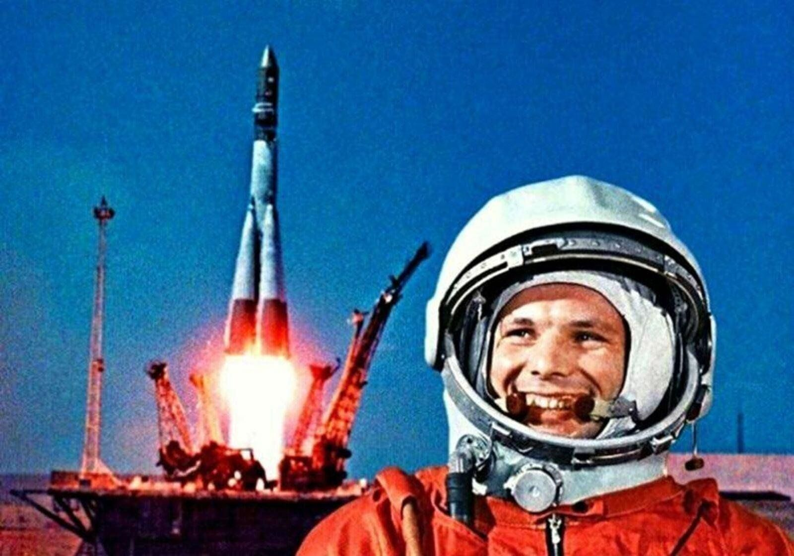

История и смысл
Как появился праздник, какие миссии изменили представление о космосе и куда стремимся дальше.
Праздник смелости, науки и любопытства. CosmoFest объединяет лекции, кинопоказы, мастер‑классы и ночные наблюдения за звёздами в одном месте.

За один день вы увидите технику, услышите живые истории инженеров и космонавтов, а также попробуете наблюдать за звездами в телескоп — в городе это проблематично.
Как появился праздник, какие миссии изменили представление о космосе и куда стремимся дальше.
Лекции, кино, мастер‑классы и ночные наблюдения — собрали по времени и площадкам.
Инженеры, астрономы и медики — коротко о каждом и теме выступления.